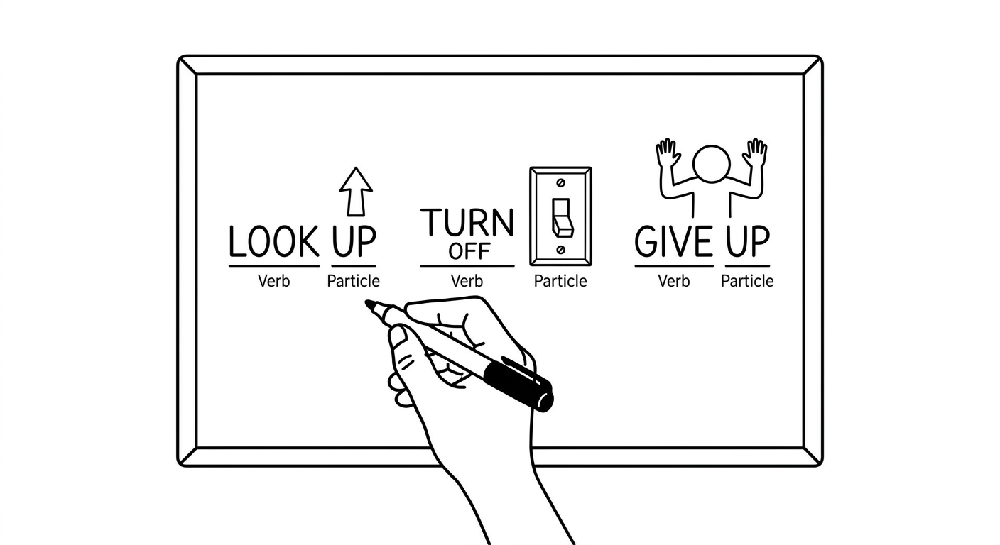
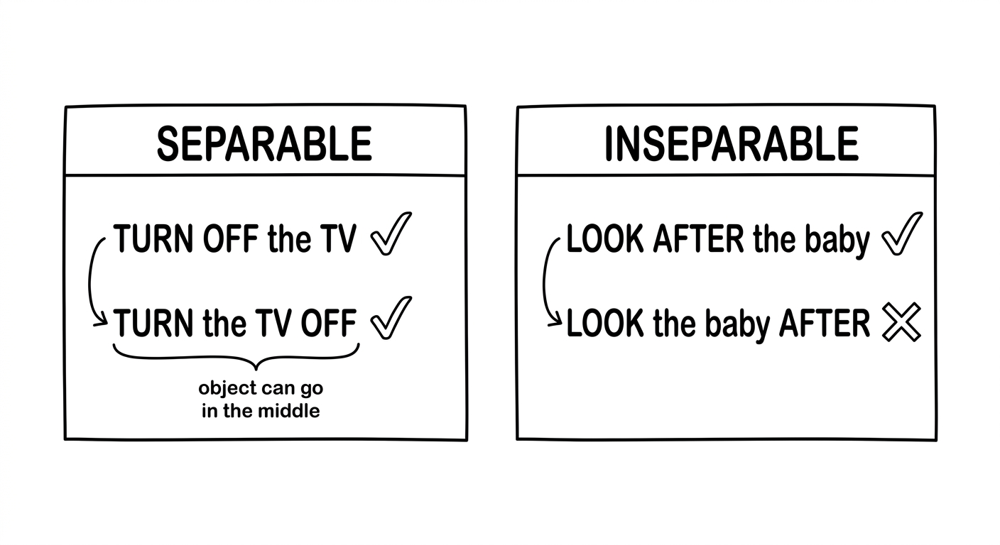
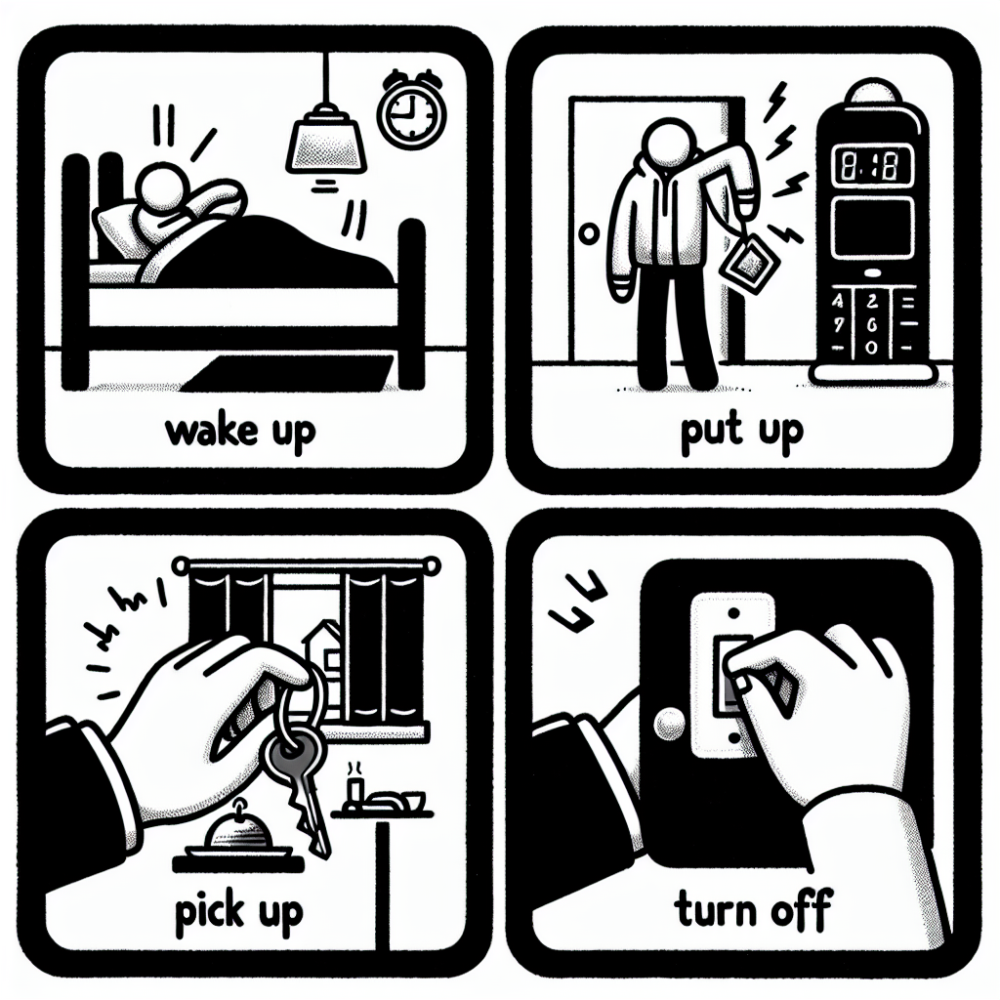
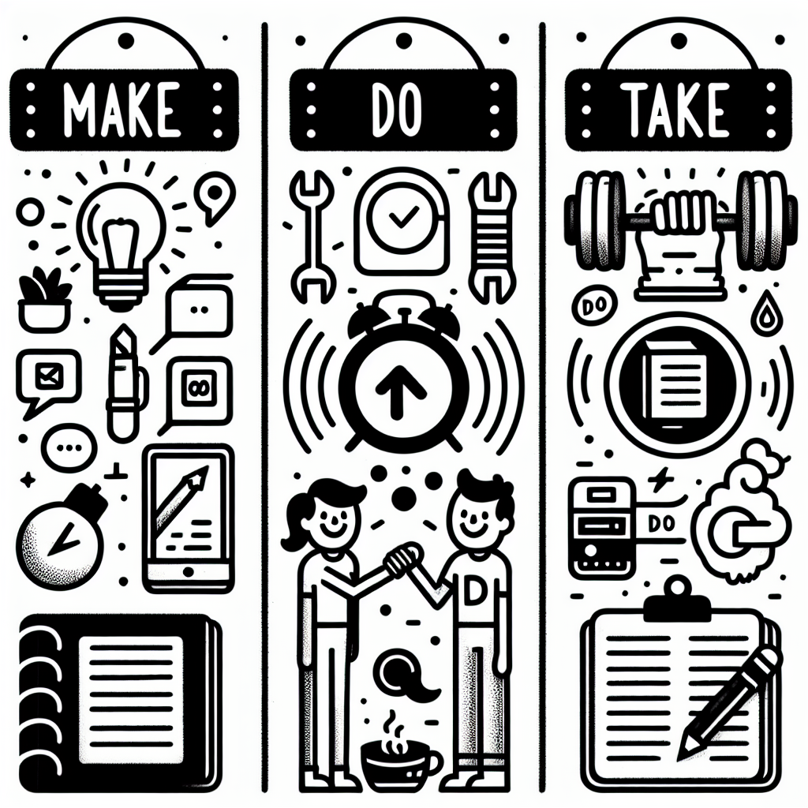

Phrasal Verbs & Collocations
Master two essential areas of natural English: phrasal verbs that change meaning with different particles, and collocations — the word combinations that native speakers use instinctively.

Phrasal Verbs
A phrasal verb is a verb combined with a particle (a preposition or adverb) that creates a new meaning different from the original verb.
| Verb | Phrasal Verb | New Meaning |
|---|---|---|
| look | look up | search for information |
| give | give up | stop trying |
| turn | turn on | activate / start a device |
You cannot guess the meaning of a phrasal verb from its individual words. Look up does not mean "look at the sky" — it means "search for information."
Separable phrasal verbs allow the object to go between the verb and the particle:
- Turn off the light. / Turn the light off. (Both correct)
- With pronouns, you must separate: Turn it off. (NOT "Turn off it.")
Inseparable phrasal verbs keep the verb and particle together — the object always comes after:
- I ran into my teacher at the mall. (NOT "I ran my teacher into.")
- She looks after her little brother. (NOT "She looks her little brother after.")

Common Phrasal Verbs
| Phrasal Verb | Meaning | Português | Type |
|---|---|---|---|
| Daily Life | |||
| wake up | stop sleeping | acordar | inseparable |
| turn on / turn off | activate / deactivate | ligar / desligar | separable |
| pick up | lift; collect someone | pegar; buscar alguém | separable |
| put on | wear; place on body | vestir; colocar | separable |
| take off | remove (clothing); depart (plane) | tirar (roupa); decolar | separable |
| throw away | discard; put in the bin | jogar fora | separable |
| run out of | have no more of something | ficar sem | inseparable |
| Work & Study | |||
| look up | search for information | pesquisar; procurar | separable |
| find out | discover information | descobrir | separable |
| figure out | solve; understand | entender; resolver | separable |
| hand in | submit (assignment) | entregar (trabalho) | separable |
| give up | stop trying | desistir | inseparable |
| carry on | continue | continuar | inseparable |
| Relationships | |||
| get along with | have a good relationship | se dar bem com | inseparable |
| look after | take care of | cuidar de | inseparable |
| run into | meet by chance | encontrar por acaso | inseparable |
| let down | disappoint | decepcionar | separable |
| bring up | mention a topic; raise a child | mencionar; criar (filho) | separable |
| come across | find by accident | encontrar por acaso | inseparable |
Examples in Context
Can you pick up the kids from school today?
Você pode buscar as crianças na escola hoje?
I forgot my jacket. I need to go back and pick it up.
Esqueci minha jaqueta. Preciso voltar e pegá-la.
She looks after her grandmother every weekend.
Ela cuida da avó todo fim de semana.
I need to hand in my report by Friday.
Preciso entregar meu relatório até sexta-feira.
We've run out of milk. Can you buy some?
Ficamos sem leite. Você pode comprar?
I ran into my old teacher at the supermarket yesterday.
Encontrei meu antigo professor no supermercado ontem.

With separable phrasal verbs, both positions work with nouns: "Turn the light off" or "Turn off the light." But with pronouns, you MUST separate:
- Turn it off. (CORRECT)
- Turn off it. (WRONG)
Suggested time: 30 minutes
Activity: Write 5 separable phrasal verbs on the board. Have students create two sentences for each: one with a noun object and one with a pronoun. This reinforces the mandatory separation rule with pronouns.
Common L1 interference: Brazilian Portuguese students often try to translate phrasal verbs literally. Emphasize that the meaning is idiomatic and must be learned as a unit.
Fill in each blank with the correct phrasal verb from the box. Use the correct form (tense and person).
look up ✓ — significa "pesquisar/procurar informação"; é o sentido de procurar a palavra no dicionário. No passado: looked.
look up é separável: com pronome objeto (it) é OBRIGATÓRIO separar — "looked it up", nunca "looked up it".
Cuidado: não confundir com find out (descobrir um fato), que não combina com "in the dictionary".
turn off ✓ — significa "desligar" (um aparelho); é o que se faz com a TV para estudar. Imperativo, então fica na forma base "turn off".
Confusão provável: turn on = ligar (sentido oposto). Como o objeto aqui é um substantivo (the TV), tanto "turn off the TV" quanto "turn the TV off" seriam corretos.
give up ✓ — significa "desistir/parar de tentar"; encaixa no incentivo "não desista". Imperativo na forma base.
Confusão provável: carry on = continuar (sentido oposto, e "Don't carry on" não faria sentido aqui). give up é inseparável quando usado sem objeto, como neste caso.
run into ✓ — significa "encontrar por acaso (uma pessoa)"; combina com "yesterday", então vai no passado: ran into.
Confusão provável: look up ou find out não cabem (são sobre informação). run into é inseparável: o objeto (my old neighbour) vem sempre depois.
pick up ✓ — significa "pegar/comprar de passagem"; combina com comprar pão no caminho de casa. Depois de "Can you", fica na forma base.
Confusão provável: look after (cuidar de) ou throw away (jogar fora) não cabem no contexto. pick up é separável; com substantivo (some bread), "pick up some bread" ou "pick some bread up" funcionam.
find out ✓ — significa "descobrir uma informação/fato"; combina com "that her flight was cancelled". Passado: found out.
Confusão provável: look up (procurar ativamente, ex. no dicionário) não cabe — aqui ela apenas descobriu a notícia. find out costuma ser seguido por uma oração com "that".
look after ✓ — significa "cuidar de (alguém)"; é o que a avó faz com o priminho. Sujeito 3ª pessoa (grandmother) + rotina (every afternoon) → presente com -s: looks after.
Confusão provável: look up (pesquisar) tem sentido totalmente diferente. look after é inseparável: o objeto vem sempre depois.
throw away ✓ — significa "jogar fora/descartar"; encaixa com revistas inúteis.
throw away é separável: com o pronome objeto (them) é OBRIGATÓRIO separar — "throw them away", nunca "throw away them".
get along with ✓ — significa "se dar bem com (alguém)"; combina com a relação com os colegas. Depois de "Do you", forma base.
Cuidado com a partícula: é "get along WITH somebody". look after (cuidar de) tem outro sentido e não cabe. É inseparável: o objeto vem depois de "with".
carry on ✓ — significa "continuar"; é seguir fazendo o exercício enquanto ela atendia. Depois de "to", forma base.
Confusão provável: give up = desistir (sentido oposto). Note a partícula: "carry on WITH something". É inseparável.
Match each phrasal verb (left) with its correct meaning (right). Write the letter in the space provided.
1-e ✓ bring up = "mencionar um assunto" (também "criar um filho"); aqui o sentido pedido é trazer um tópico à tona.
2-c ✓ come across = "encontrar por acaso (uma coisa)". Cuidado para não confundir com run into (encontrar uma pessoa por acaso).
3-a ✓ let down = "decepcionar alguém". É separável: "let me down".
4-g ✓ figure out = "resolver/entender". Tentação: confundir com find out (descobrir), mas figure out implica raciocinar.
5-b ✓ hand in = "entregar (um trabalho)".
6-i ✓ put on = "vestir; colocar no corpo". Não confundir com take off (tirar).
7-d ✓ take off = "tirar (roupa)" (também "decolar"). Par opostos com put on.
8-f ✓ run out of = "ficar sem (não ter mais algo)".
9-h ✓ wake up = "acordar (parar de dormir)".
10-j ✓ turn on = "ligar/ativar um aparelho". Oposto de turn off.
Select the correct phrasal verb to complete each sentence.
The plane _______ at 6 a.m. and landed in London at noon.
a) took offa) take off ✓ — significa "decolar (avião)"; é o que o avião faz às 6h antes de pousar. Passado: took off.
b) put on ✗ — significa "vestir/colocar (roupa)", não cabe com avião.
c) turn on ✗ — significa "ligar/ativar (aparelho)", sentido diferente.
I _______ an interesting article about climate change while reading the newspaper.
b) came acrossb) come across ✓ — significa "encontrar por acaso (uma coisa)"; combina com achar um artigo lendo o jornal. Passado: came across.
a) ran into ✗ — também é "por acaso", mas com PESSOAS, não com um artigo/coisa.
c) looked up ✗ — significa "pesquisar ativamente"; aqui o encontro foi acidental, não uma busca.
He promised to help, but he _______ me _______. He never showed up.
a) let ... downa) let ... down ✓ — significa "decepcionar alguém"; combina com prometer ajuda e não aparecer. É separável: o objeto (me) vai no meio — "let me down".
b) gave ... up ✗ — give up = desistir, e normalmente não leva pessoa como objeto nesse sentido.
c) brought ... up ✗ — bring up = mencionar um assunto / criar um filho, não cabe aqui.
It took me a long time to _______ the answer to the puzzle.
c) figure outc) figure out ✓ — significa "resolver/descobrir pela razão"; combina com levar tempo para achar a resposta do enigma.
a) hand in ✗ — entregar (um trabalho), sentido diferente.
b) carry on ✗ — continuar; não tem a ver com resolver o enigma.
My sister and I _______ very well. We never fight.
b) get alongb) get along ✓ — significa "se dar bem"; combina com "nunca brigamos". Sem objeto direto, usa-se só "get along" (com pessoa, seria "get along with").
a) look after ✗ — cuidar de alguém, sentido diferente.
c) bring up ✗ — mencionar / criar (filho), não cabe.
We _______ sugar, so I need to go to the shop.
b) ran out ofb) run out of ✓ — significa "ficar sem (algo)"; combina com não ter mais açúcar e precisar ir à loja. Passado: ran out of.
a) threw away ✗ — jogar fora (descartar de propósito), não é o caso.
c) picked up ✗ — pegar/comprar, sentido oposto ao de ficar sem.
Collocations
Collocations are natural word combinations that native speakers use together. They sound "right" to a native ear, even though other combinations might be grammatically correct.
| Natural (Correct) | Unnatural (Incorrect) |
|---|---|
| make a decision | do a decision |
| take a shower | make a shower |
| do homework | make homework |
| have a conversation | do a conversation |
There is no grammar rule for collocations — they are learned through exposure and practice.
| Type | Pattern | Examples |
|---|---|---|
| Verb + Noun | make/do/take/have + noun | make a mistake, do a favour, take a break |
| Adjective + Noun | adjective + noun | heavy rain, strong coffee, fast food |
| Adverb + Adjective | adverb + adjective | highly unlikely, deeply concerned, fully aware |

Common Collocations
| Collocation | Português | Example Sentence |
|---|---|---|
| MAKE + noun | ||
| make a mistake | cometer um erro | Everyone makes mistakes when learning. |
| make a decision | tomar uma decisão | We need to make a decision soon. |
| make friends | fazer amigos | She made friends quickly at her new school. |
| make progress | fazer progresso | You're making great progress in English! |
| make an effort | fazer um esforço | He made an effort to arrive on time. |
| DO + noun | ||
| do homework | fazer lição de casa | Have you done your homework yet? |
| do exercise | fazer exercício | I try to do exercise three times a week. |
| do business | fazer negócios | They do business with companies abroad. |
| do a favour | fazer um favor | Can you do me a favour? |
| do research | fazer pesquisa | She's doing research on renewable energy. |
| TAKE + noun | ||
| take a break | fazer uma pausa | Let's take a break and have some coffee. |
| take a shower | tomar banho | I take a shower every morning. |
| take notes | fazer anotações | Students should take notes during the lecture. |
| take a photo | tirar uma foto | Can you take a photo of us? |
| take responsibility | assumir responsabilidade | You need to take responsibility for your actions. |
| HAVE + noun | ||
| have a conversation | ter uma conversa | We had a long conversation about the future. |
| have an experience | ter uma experiência | I had an amazing experience travelling alone. |
| have a problem | ter um problema | We're having a problem with the internet. |
| have fun | se divertir | Did you have fun at the party? |
| have a go | tentar; experimentar | I've never tried surfing, but I'd like to have a go. |
Natural vs. Unnatural Combinations
Make a decision — NOT "do a decision"
Tomar uma decisão
Do homework — NOT "make homework"
Fazer lição de casa
Take a photo — NOT "make a photo"
Tirar uma foto
Have fun — NOT "make fun" (which means "to mock"!)
Se divertir (cuidado: "make fun of" = zombar de)
Heavy rain — NOT "strong rain"
Chuva forte
Strong coffee — NOT "heavy coffee"
Café forte
"Make" vs. "Do" — the classic challenge for Portuguese speakers!
- MAKE = creating or producing something: make a cake, make a mistake, make friends, make a decision, make progress
- DO = performing an activity or task: do homework, do exercise, do business, do a favour, do research
In Portuguese, both often translate to "fazer", which is why this is so tricky!
Suggested time: 30 minutes
Activity: Create flashcards with the verb on one side (make/do/take/have) and the noun on the other. Students work in pairs to quiz each other. Keep score for a fun competitive element.
L1 note: The "fazer" problem is the #1 collocation challenge for Brazilian students. Spend extra time on make vs. do with plenty of examples.
Complete each sentence with make, do, take, or have in the correct form.
A colocação correta é make a decision ✓ ("tomar uma decisão"). Depois de "to", forma base "make".
Erro comum do brasileiro: dizer "do a decision" porque "fazer" traduz tanto make quanto do. Não existe "do a decision".
A colocação correta é do a favour ✓ ("fazer um favor"). Depois de "Can you", forma base "do".
Erro comum: "make a favour". Em inglês favor anda com DO, não com make.
A colocação correta é take a break ✓ ("fazer uma pausa"). Depois de "should", forma base "take".
Erro comum: "do a break" ou "make a break" (pela tradução "fazer"). Pausa anda com TAKE.
A colocação correta é make progress ✓ ("fazer progresso"). A frase é sobre o semestre passado, então vai no passado: made.
Erro comum: "do progress". Progresso anda com MAKE (algo que se cria/produz).
A colocação correta é have a conversation ✓ ("ter uma conversa"). A ação já aconteceu, então passado: had.
Erro comum: "make a conversation" ou "do a conversation". Conversa anda com HAVE.
A colocação correta é do homework ✓ ("fazer lição de casa"). Aqui está no present perfect ("Have you ... yet?"), então usa-se o particípio done.
Erro comum: "make homework". Lição/tarefa anda com DO (atividade/tarefa).
A colocação correta é take notes ✓ ("fazer anotações"). Depois de "to", forma base "take".
Erro comum: "make notes" (existe em inglês britânico, mas a forma esperada aqui é take) ou "do notes". Anotações andam com TAKE.
A colocação correta é make friends ✓ ("fazer amigos"). A ação está no passado ("when he moved"), então made.
Erro comum: "do friends". Amigos andam com MAKE.
A colocação correta é have fun ✓ ("se divertir"). "Last weekend" pede passado: had.
Cuidado: "make fun" existe, mas significa "make fun OF someone" = zombar de alguém. Para "se divertir" é HAVE fun.
A colocação correta é do business ✓ ("fazer negócios"). Sujeito 3ª pessoa (the company) no presente → does.
Erro comum: "make business". Negócios andam com DO.
Match the word on the left with the correct word on the right to form a natural collocation.
1-b ✓ make an effort = "fazer um esforço". Esforço anda com MAKE (não "do an effort").
2-d ✓ take responsibility = "assumir responsabilidade". Anda com TAKE (não "make/do responsibility").
3-c ✓ heavy rain = "chuva forte". Em inglês a chuva é "heavy", não "strong".
4-f ✓ do research = "fazer pesquisa". Pesquisa anda com DO (não "make research").
5-g ✓ strong coffee = "café forte". O café é "strong", não "heavy" — par tentador com a chuva.
6-h ✓ have a go = "tentar/experimentar". Anda com HAVE.
7-e ✓ highly unlikely = "muito improvável". Advérbio + adjetivo: usa-se "highly", não "strongly".
8-a ✓ deeply concerned = "profundamente preocupado". Combina "deeply" com "concerned".
Each sentence contains a wrong collocation. Find the error and rewrite the sentence with the correct collocation.
I need to do a decision about my career.
I need to make a decision about my career.O erro é do a decision ✗. A colocação correta é make a decision ✓ ("tomar uma decisão"). Decisão anda com MAKE, não com do.
She always makes her homework before dinner.
She always does her homework before dinner.O erro é make homework ✗. A colocação correta é do homework ✓ ("fazer lição"). Como o sujeito é 3ª pessoa (she), fica does. Lição anda com DO.
Can you make a photo of us in front of the monument?
Can you take a photo of us in front of the monument?O erro é make a photo ✗. A colocação correta é take a photo ✓ ("tirar uma foto"). Foto anda com TAKE, não com make.
There was strong rain all afternoon, so the match was cancelled.
There was heavy rain all afternoon, so the match was cancelled.O erro é strong rain ✗. A colocação correta é heavy rain ✓ ("chuva forte"). Em inglês a chuva é "heavy"; "strong" combina com coffee/wind, não com rain.
We did a lot of mistakes on the test.
We made a lot of mistakes on the test.O erro é do mistakes ✗. A colocação correta é make a mistake / make mistakes ✓ ("cometer erros"). Erro anda com MAKE, não com do.
Let's do a break and come back in ten minutes.
Let's take a break and come back in ten minutes.O erro é do a break ✗. A colocação correta é take a break ✓ ("fazer uma pausa"). Pausa anda com TAKE, não com do.
Reading: An Informal Email
From: lucas.silva@email.com
To: camila.santos@email.com
Subject: Long time no see!
Hey Camila,
How are you? I've been meaning to write to you for ages! So much has happened since we last caught up. I finally made a decision about university — I'm going to study engineering in Campinas! I found out last week when the results came out, and I couldn't believe it. My parents were so proud.
Before I move, I need to take care of a few things here. I'm trying to do some research about accommodation, but I haven't figured out where to live yet. I've come across a few interesting flats online, but they're a bit expensive. I'll carry on looking and hopefully something good will turn up.
By the way, I ran into your brother at the shopping centre last Saturday! He told me you made friends with some people from your English course. That's great! Have you had fun in the classes? I know you were worried about getting along with the other students.
I've been doing a lot of exercise lately — I took up running and I try to go three times a week. I don't want to give up this time like I did with swimming! I'm also making an effort to eat better. My mum says I should take responsibility for my own meals before I leave home!
Anyway, I'd love to have a conversation properly. Let's not put off meeting up any longer! Are you free next weekend? Let me know!
Take care,
Lucas
Pre-reading activity: Ask students: "When was the last time you wrote an email or long message to a friend? What did you talk about?" This activates the informal register.
Reading strategy: Have students read through once for general understanding, then re-read looking specifically for phrasal verbs and collocations. They can use two different colours to highlight each type.
Re-read Lucas's email and list the following from the text:
6 phrasal verbs (write the phrasal verb and the sentence where it appears):
Qualquer 6 da lista contam, pois todos são phrasal verbs (verbo + partícula) presentes no e-mail. Sentidos: find out = descobrir; figure out = resolver/entender; come across = achar por acaso; carry on = continuar; turn up = aparecer/surgir; run into = encontrar por acaso (pessoa); get along with = se dar bem com; take up = começar (um hobby); give up = desistir; put off = adiar.
Erro provável: o aluno listar colocações (ex. "made friends") aqui — essas pertencem à parte B, não a phrasal verbs.
4 collocations (write the collocation and the sentence where it appears):
Qualquer 4 da lista contam, pois todas são colocações verbo+substantivo do tipo make/do/take/have do e-mail: make a decision (tomar decisão), do research (fazer pesquisa), make friends (fazer amigos), have fun (se divertir), do exercise (fazer exercício), make an effort (fazer esforço), take responsibility (assumir responsabilidade), have a conversation (ter uma conversa).
Erro provável: confundir com phrasal verbs (parte A). A diferença: aqui o verbo (make/do/take/have) combina com um substantivo, não com uma partícula que muda o sentido.
Answer the questions in complete sentences based on the email.
What decision did Lucas make about his future?
Lucas made a decision to study engineering in Campinas.No 1º parágrafo Lucas diz "I finally made a decision about university — I'm going to study engineering in Campinas". A resposta deve mencionar engenharia em Campinas. Aceita-se variação na frase, desde que seja sentença completa e use a colocação make a decision.
What problem is Lucas having with accommodation?
He has come across some flats online, but they are a bit expensive. He hasn't figured out where to live yet.No 2º parágrafo: "I've come across a few interesting flats online, but they're a bit expensive ... I haven't figured out where to live yet". A resposta deve indicar que os apartamentos são caros e que ele ainda não decidiu onde morar. Os phrasal verbs come across e figure out reforçam a compreensão do texto.
What new activity has Lucas started, and why is it different from before?
Lucas took up running. This time he doesn't want to give up like he did with swimming before.No 4º parágrafo: "I took up running ... I don't want to give up this time like I did with swimming". A resposta deve dizer que ele começou a correr (take up = começar um hobby) e que, diferente da natação, desta vez não quer desistir (give up).
What does Lucas suggest at the end of the email?
He suggests they meet up next weekend. He says they shouldn't put off meeting any longer.No final do e-mail: "Let's not put off meeting up any longer! Are you free next weekend?". A resposta deve indicar que ele sugere se encontrarem no próximo fim de semana e não adiar mais (put off = adiar; meet up = se encontrar).
Chapter 8 - Answer Key
Exercise 1: Complete with the Correct Phrasal Verb
Exercise 2: Match the Phrasal Verb to Its Meaning
Exercise 3: Choose the Correct Phrasal Verb
Exercise 4: Make, Do, Take, or Have?
Exercise 5: Match to Form Collocations
Exercise 6: Fix the Collocation Errors
Exercise 7: Find Phrasal Verbs and Collocations
A. Phrasal verbs (any 6): found out, figured out, come across, carry on, turn up, ran into, getting along with, took up, give up, put off, take care of
B. Collocations (any 4): made a decision, do some research, made friends, had fun, doing a lot of exercise, making an effort, take responsibility, have a conversation